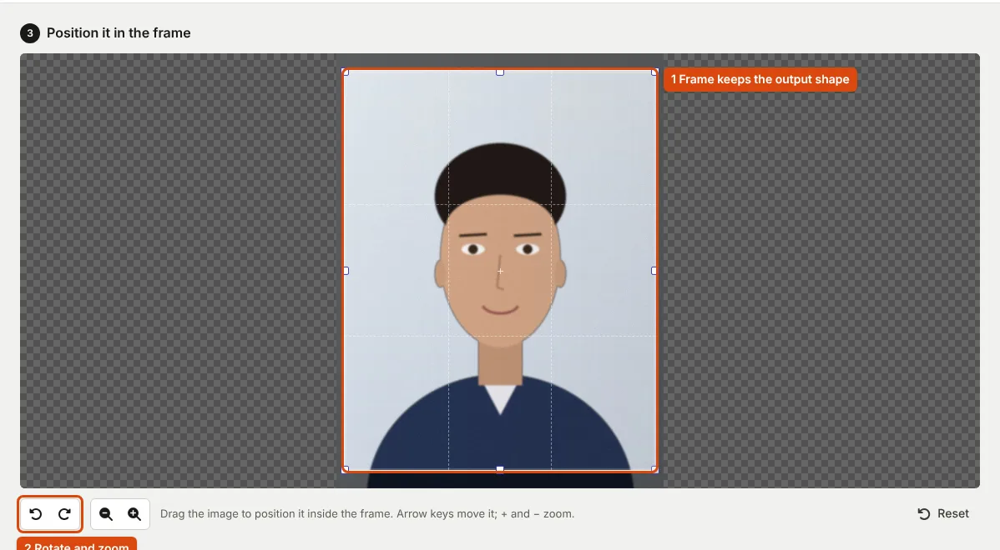

How to Take a Passport-Size Photo at Home for an Online Form
Most photo rules are about light, background and how much of the frame your face fills. A phone can meet all of them if you control those three things.
What the rules ask for
Photo rules differ between exams, but they describe the same kind of picture. The table collects the requirements that are written down, so you can see which ones apply to the form you are filling.
| Rule | Where it is stated |
|---|---|
| Plain white background | UPSC: "Photo background shall be plain white" (UPSC instructions, p. 4); NEET (UG): "against white background" (bulletin, p. 16); IBPS: "light-coloured, preferably white" (CRP PO/MT-XVI) |
| Face fills most of the frame | UPSC: at least 75%; NEET (UG): "80% area of the image should be candidate's face" |
| Both ears visible, facing the camera | UPSC: "both ears should be visible"; NEET (UG): "80% face (without mask) visible including ears" |
| No cap or dark glasses | IBPS: "Caps, hats and dark glasses are not acceptable. Religious headwear is allowed but it must not cover your face"; SSC (live photo): no "cap, mask or glasses/spectacles" (CGL 2026 notice, para 9.4) |
| Recent | NEET (UG) 2026: "taken after 01 January 2026"; IBPS: "recent passport style colour picture" |
| Natural expression, eyes open | Passport application: "Expression of the face should be natural (no grinning, frowning or raised eyebrows)"; "Eyes must be open" (passport instruction booklet) |
Two exams no longer take an uploaded photo for every step. SSC captures the photo live in its application; UPSC, IBPS and NEET (UG) take an uploaded photo and a live one. For a passport, a photo is "NOT REQUIRED for applications submitted at Passport Seva Kendra" because it is taken there; the 4.5 × 3.5 cm print rules apply to paper forms submitted elsewhere.
Light: face a window
- Stand facing a window in daylight, with no direct sun on your face. Light from the front fills the face evenly.
- Switch off ceiling lights above you: light from directly above leaves shadows under the eyebrows and nose.
- If one side of the face is darker, hold a sheet of white paper just outside the frame on that side to reflect light back.
- Avoid the flash. It leaves a bright patch on the forehead and glare on glasses.
Lighting matters because brightness is one of the reasons SSC lists for rejecting photos: "Photo not sufficiently bright" and "Photo is blurred" are both on its list.
Background, distance and framing
- Background: a plain white or very light wall, with you about a metre in front of it so your shadow falls behind you rather than on the wall. Check the corners of the frame for switches, frames or curtains.
- Camera height: at eye level, as SSC's live-photo instructions also require ("Ensure the camera is at eye level"). A low camera enlarges the chin; a high one shortens the face.
- Camera: the back camera, on a stack of books with a timer, or held by someone else. Do not use digital zoom; take the photo wider and crop later.
- Pose: face the camera straight on, shoulders level, mouth closed, hair away from the ears.
- Space: leave room above the head and around the shoulders, so you can crop to the shape the form needs.
Take several shots and compare them at full size on a computer. Small blur is hard to see on a phone screen.

After the photo
- Open the original file in the resizer, choose your exam's requirement, and crop so the face covers about three quarters of the frame.
- Download, then check the result at 100% zoom. If the face is soft, the limit was forced onto too many pixels; see getting under a KB limit without blur.
- For printed copies, the passport photo print tool lays out 3.5 × 4.5 cm copies on a 4 × 6 inch or A4 sheet. The passport booklet notes that a "Photograph in computer print will not be accepted" for its paper forms, so have those printed at a photo lab.
Do not replace the background in an editing app. Soft edges around hair are easy to spot, and NEET (UG) says "Computer-generated photos are not acceptable". Retake the photo against a better wall instead. If a portal still refuses the file, photo upload errors and fixes explains each message.
Frequently asked questions
Can I wear glasses?
It depends on the exam. SSC's live photo must be taken without glasses; NEET (UG) allows spectacles "only if being used regularly"; UPSC rejects photos with eyes "hidden under coloured or dark glasses". Follow your notice, and avoid glare either way.
Colour or black and white?
Colour, unless the notice allows otherwise. UPSC's portal rejects black and white photos; NEET (UG) 2026 allows either for the upload but asks for colour prints.
Do I need a studio?
For most online forms, no: window light and a plain wall meet the written rules. For printed copies of a paper application, use a photo lab.
Sources
- UPSC: Instructions for Uploading the Photo & Signature, February 2026, pp. 2–4
- NTA: Information Bulletin NEET (UG)-2026, pp. 14–17
- IBPS: CRP PO/MT-XVI notification, Annexure III
- SSC: Combined Graduate Level Examination 2026 notice, para 9.4
- Ministry of External Affairs: Instructions for filling the passport application form, photograph dos and don'ts
Measurements on this page come from running ApplyReady's own tools on the synthetic test images described in the editorial policy. Found a mistake? Report an error.